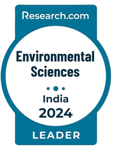
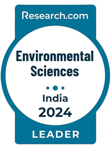
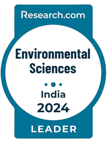

Sunita VARJANI
Senior Associate Professor at UPES
Dehradun, India &
Adjunct Professor at Korea University


-
10+
YEARS OF
EXPERIENCE -
 


-

-

-


Senior Associate Professor at UPES
Dehradun, India &
Adjunct Professor at Korea University
YEARS OF
EXPERIENCE

Dr. Sunita Varjani is currently working as a Senior Associate Professor at UPES, Dehradun, India. Additionally, she holds the position as Adjunct Professor at Korea University, Republic of Korea and the Director at the Institute of Chartered Waste Managers, India. She has worked as visiting fellow at the City University of Hong Kong, Hong Kong and Scientific Officer at Gujarat Pollution Control Board, Gandhinagar, Gujarat, India. Dr. Varjani is a highly accomplished researcher and collaborator with a strong international and national presence. She has an extensive research background in environmental and industrial biotechnology, bioprocess technology, biomanufacturing and waste management. Her expertise has been recognized through various prestigious appointments and memberships. In 2021, Dr. Varjani was selected as a Member of The National Academy of Sciences, India (NASI), a testament to her outstanding contributions to the field. Dr. Varjani has actively contributed to research and development initiatives in collaboration with government departments, and research institutions.
She has served as Chairperson/member of technical and financial committee (for instrument procurement) and research advisory committee at Government of Gujarat institutes. Her research endeavors focus on developing innovative process technologies for pollution control, biomanufacturing, waste management, and resource recovery. Dr. Varjani is committed to promoting sustainable practices and advancing the concepts of circular bioeconomy. Her work has been recognized through various accolades, including being listed as a “Highly Cited Researchers 2022” (Top 1% in the World”, Highly Cited Researchers are 1 in 1,000) published by Clarivate’s Web of Science. She has been enlisted as a Highly Cited Researcher (Top 2% in the World), Elsevier Citation Report (2020-Contiune). In addition to her research achievements, Dr. Varjani holds editorial positions in several scientific journals. She serves as the executive editor of the Archives of Microbiology journal and is a senior editor for the Sustainable Environment journal. Furthermore, she is an editor for the Indian Journal of Microbiology, an associate editor for the Spanish Journal of Soil Science, and holds positions on the editorial boards of Current Pollution Reports, Sustainable Chemistry, and Pharmacy. Dr. Varjani's impressive track record, extensive collaborations, and commitment to sustainable research make her a prominent figure in the field of environmental and industrial biotechnology and biomanufacturing.

Our team of dedicated researchers is committed to addressing the challenges in these fields and creating sustainable solutions for a better future. By exploring the intersection of water, energy, and the environment, we aim to contribute to the resilience and well-being of society, while promoting the principles of waste biorefinery, circular bioeconomy, and sustainable development goals.


Journals